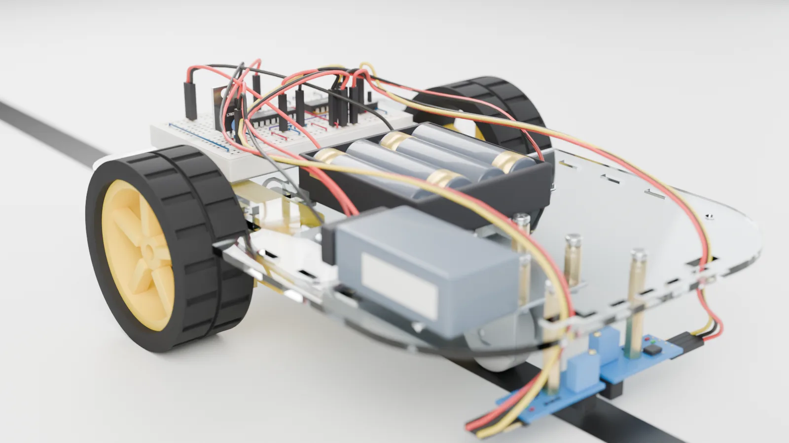

Diseño Digital · Examen 3er parcial · Proyecto integrador
AGV seguidor de línea
Sigue una línea negra sobre blanco o una blanca sobre negro. Un selector en el chasis cambia de modo sin tocar ningún cable. Toda la decisión la toman dos compuertas XOR de un 74LS86: sin microcontrolador, sin resistencias y con un solo integrado lógico.
Opción 1 · compuertas1 × 74LS86L293D2 sensores IRSelector NEGRA / BLANCAProtoboard de 400 puntosUna sola fuente: 4 × AA · 6 V
Arquitectura elegida
Dos XOR deciden todo
Cada sensor entra a una XOR junto con el selector: SEL = 0 deja pasar la lectura tal cual (línea negra) y SEL = 1 la invierte (línea blanca). Cada XOR manda directamente al motor del lado contrario a través del L293D. No hacen falta más compuertas.
2 integrados lógicos y de potencia · 2 interruptores (selector y encendido) · 0 resistencias · — jumpers · 12 cables a sensores, motores y pilas · una sola fuente: 4 × AA
Los dos sensores van sobre la cinta: su separación (unos 12 mm) debe ser menor que el ancho de la línea (19 mm en cinta de aislar).
Cargando el montaje.
Tu ritmo de montajeElección y avance guardados
Avance guardado
Explora tu montajePulsa un integrado para explorar sus patas y conexiones
Selecciona un cable en el visor o en la lista.
El contorno dorado marca todo el cable seleccionado. Anillo verde: origen; anillo azul: destino. Arrastra para girar y usa la rueda para acercar. Puedes aislar el cable para seguir su recorrido.
En 2D: rueda para zoom, arrastra para mover y doble clic para ajustar. Los aros marcan los extremos sin taparlos; las coordenadas están en la tarjeta. El encuadre se puede cambiar durante el recorrido.
Vista del paso
Prueba de la lógica
SW1
Motor izq. —Motor der. —
Pulsa SI o SD para poner cada sensor sobre negro o blanco. La lógica sale de las redes de cada pata del 74LS86 y del L293D.
Vista superior · Frente del carrito arriba · Muesca a la izquierda · Cruces sin unión
Lupa
1Origen
→
2Destino
+6 VPilas antes de SW2GNDSELSI · SDMI · MDResaltado: paso actual · Tenue: pasos anteriores
El sensor da 1 sobre negro y 0 sobre blanco. Una XOR con el selector SW1 deja pasar esa lectura (cinta negra) o la invierte (cinta blanca).
Tabla de verdad
Tabla de verdad completa. La fila resaltada es la que vive ahora la prueba o la simulación.
SEL
SI SD
li ld
MI MD
Acción
0
1 1
1 1
1 1
Avanza
0
1 0
1 0
0 1
Gira a la izquierda
0
0 1
0 1
1 0
Gira a la derecha
0
0 0
0 0
0 0
Frena · línea perdida
1
0 0
1 1
1 1
Avanza
1
0 1
1 0
0 1
Gira a la izquierda
1
1 0
0 1
1 0
Gira a la derecha
1
1 1
0 0
0 0
Frena · línea perdida
Ecuaciones
li = SI ⊕ SEL = SI·SEL̄ + SĪ·SEL
ld = SD ⊕ SEL = SD·SEL̄ + SD̄·SEL
MI = ld = SD ⊕ SEL · pin 8 del 74LS86
MD = li = SI ⊕ SEL · pin 11 del 74LS86
Cada motor depende de una sola variable de sensor y del selector, así que el mapa de Karnaugh de cada salida es un tablero de ajedrez: no se puede simplificar más que una XOR. Con compuertas AND/OR/NOT serían dos AND, una OR y dos inversores por motor.
Cruzado a propósito: si la línea se va a la izquierda, el sensor derecho la pierde, el motor izquierdo frena y el derecho empuja el giro hacia la línea.
Más detalles: señales, pérdida de línea, alimentación, alternativas y Proteus
Entradas y salidas
Señales del control
Señal
Significado
SI · SD
Salida digital (DO) de los sensores izquierdo y derecho: 1 = negro, 0 = blanco
SEL
Selector SW1: 0 = línea negra · 1 = línea blanca
li · ld
Ese sensor está sobre la línea
MI · MD
Orden a los motores izquierdo y derecho: 1 = avanza, 0 = freno
Antes de armar, mide tu módulo: si da 0 sobre negro, intercambia los dos tiros de SW1 una sola vez. Así el 0 vuelve a ser NEGRA, sin cambiar la lógica.
Pérdida de línea: respuesta segura
Si ningún sensor ve la línea, MI = MD = 0. En el L293D, 1A = 0 y 2A = 0 con EN = 1 ponen las dos terminales del motor en bajo: freno dinámico. El carrito se detiene en lugar de seguir de largo, y vuelve a arrancar en cuanto un sensor encuentra la cinta.
El mismo freno hace las correcciones: en una curva, la rueda interior se detiene y el carrito pivota sobre ella.
Por qué los sensores van sobre la cinta
Con dos sensores por fuera de la línea, «ninguno la ve» significa a la vez «voy recto» y «la perdí», y no hay forma de distinguirlo. Sobre la cinta, cada combinación tiene un solo significado y la tabla cubre las cuatro acciones que pide el examen.
Alimentación
Una sola fuente: el portapilas 4 × AA entra a SW2. En ON, el común de SW2 lleva unos 6 V a los dos rieles rojos (unidos con un jumper). De ahí toman corriente el 74LS86, los sensores y los pines 16 (lógica) y 8 (motores) del L293D. Sin pila de 9 V ni regulador, como el carrito que ya entregaron tus compañeros.
Tierra: el negro del portapilas va al riel azul; un jumper une los dos azules.
Motores: nunca salen de una compuerta, solo del puente H. El L293D (con D) trae los diodos de protección; el L293 sin D no los tiene.
El 74LS86 está especificado de 4.75 a 5.25 V. Con 4 AA nuevas recibe unos 6 V, por debajo de su máximo absoluto de 7 V: funciona, pero se calienta un poco más. Si quieres quedar dentro de la hoja de datos, usa 4 pilas recargables NiMH (4.8 V).
Comparación de arquitecturas
Alternativas evaluadas. Los jumpers de las otras opciones son estimaciones, no rutas verificadas.
Opción
Integrados lógicos
Sensores
Jumpers
1 · 2 XOR (esta)
74LS86 (2 de 4)
2
—
1 · 3 sensores
74LS86 + 74LS02
3
≈ 35
2 · multiplexores
2 × 74LS151
2
≈ 40
3 · GAL22V10
1 GAL + programador
2
≈ 20
La versión de tres sensores tolera desviaciones mayores en curvas cerradas. Úsala solo si las pruebas en pista lo piden: añade un integrado, un sensor y unos diez cables.
Conexiones para armarlo en Proteus
Conexiones por pata. Usa terminales DEFAULT con estos nombres: misma etiqueta, misma red.
SI y SD con LOGICSTATE o un SW-SPDT a VCC/GND (1 = negro)
Motores
MOTOR entre MIA–MIB (izquierdo) y MDA–MDB (derecho) · BAT = 6 V (BATTERY de 6 V en Proteus)
En Proteus busca 74LS86, L293D, SW-SPDT, LOGICSTATE, BATTERY y MOTOR. Para el video, cambia SI, SD y SEL y muestra el giro de cada motor; las ocho filas de la tabla quedan cubiertas.
Ensamblado del carrito
Dónde va cada pieza
Tu chasis 2WD con sus tornillos, sensores, portapilas y la protoboard de la guía. Avanza paso a paso o gira el modelo.

Arrastra para girar · rueda o pellizco para acercar
Necesitas
Chasis 2WD: placa a 44 mm del piso, ruedas de 65 mm a 137 mm entre sí, sensores bajo el tope frontal a 118 mm del eje y rueda loca atrás.
Simulación del recorrido
El carrito en la pista
Tapete de 1.8 × 1.2 m visto desde arriba. Los sensores alimentan la misma lógica del montaje.
SI · SD
—
SEL
—
li · ld
—
Motores
—
Acción
—
Vueltas
0
Demostración geométrica: sin fricción ni sensibilidad real del sensor.
Prueba visual
Las ocho combinaciones
Recorre la tabla de verdad sobre el montaje: cada combinación de SEL, SI y SD muestra qué hace cada motor. La lógica se calcula con las redes de las patas del modelo.
No sustituye a Proteus ni a la prueba en pista: velocidad real, calibración de los sensores y caída de voltaje del L293D quedan por comprobar.
Revisa por partes
Una comprobación a la vez.
Elige lo que ocurre. Cada revisión te lleva al paso correspondiente.
Prepara tu mesa
Materiales y dónde conseguirlos
Ya lo tienes
De tu inventario
L293D de la puerta automática
74LS86 (está en tu lista de integrados permitidos; confirma que tienes uno)
Un motorreductor TT amarillo
Protoboard y jumpers; si solo tienes la de 830 puntos, sirve igual
Comprar
Lista corta
3 sensores seguidores de línea con salida digital (2 + 1 de repuesto)
Kit chasis 2WD: 2 motorreductores TT, 2 ruedas, rueda loca y portapilas 4 × AA
2 interruptores deslizables 1P2T de paso 2.54 mm (selector y encendido)
4 pilas AA y cables dupont macho-hembra
Cinta de aislar negra y blanca de 19 mm, cartulina blanca y negra
Dónde comprar en Villahermosa y en línea
Dónde comprar. Precios y existencias cambian: llama antes de ir.
Lugar
Qué conseguir
Datos
Steren Centro
Sensor seguidor de línea ARD-377 ($39, LM393, 3.3–5 V), pilas, cables, cinta
Av. Constitución 334, Centro · (993) 314 5506 · lun–vie 9–18, sáb 9–14
Envío desde CDMX: cuenta los días de paquetería antes del 25 de noviembre
Mercado Libre
Kits chasis 2WD desde unos $135; revisa que incluya motores TT, ruedas, rueda loca y portapilas
Elige envío al día siguiente si está disponible
Sin comprar el interruptor: usa un interruptor del DIP4 que ya tienes con una resistencia de 1 kΩ de SEL al riel rojo (+6 V). ON = NEGRA, OFF = BLANCA.
Alcance de la prueba
La lógica del visor y de la simulación se calcula con las redes conectadas a cada pata de U1 y U2 y con la tabla del 74LS86 y del L293D. Las pruebas automáticas reconstruyen las tiras de la protoboard, buscan cortos y entradas flotantes, recorren las ocho combinaciones y dan varias vueltas a la pista en los dos modos. Es una comprobación lógica y geométrica: falta simularlo en Proteus y probarlo en la pista real.
Los rieles de una protoboard de 400 puntos suelen ser continuos. Si la tuya los corta a la mitad, une cada tramo al mismo potencial. En la guía los dos rieles rojos son +6 V (después de SW2) y los dos azules son GND.